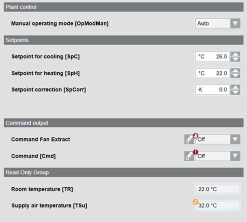

Create a Plant Operator Tableau
Scenario
You want to compile the most important information from a graphic page and display and operate it from a plant operator tableau. For background information, see the Graphic Pages in the Project section.
Prerequisites
- System Manager is in Engineering mode.

Overview